42,000
เคสในระบบ
ชุดข้อมูลขนาดใหญ่
85.0%
อัตราสำเร็จถาวร
ได้บ้านตลอดชีวิต
15.0%
ถูกส่งคืนสถานสงเคราะห์
6,297 ตัวล้มเหลว
1 ใน 7
สัดส่วนความสูญเสีย
เทียบเคียงสากล
การรับเลี้ยงสุนัขไม่ใช่แค่เรื่องของความเมตตา แต่คือ "วิทยาศาสตร์แห่งการจับคู่ที่ลงตัว (The Science of Matching)" โดยมุ่งเน้นการแก้ปัญหาที่พฤติกรรมและการปรับตัว
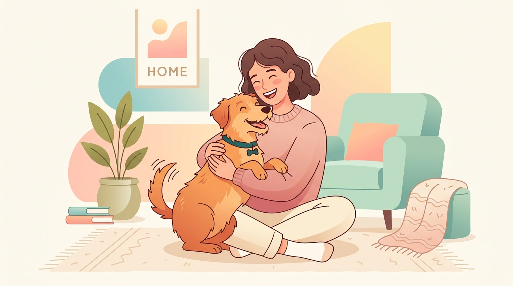
ภาพประกอบ: สุนัขและเจ้าของในบ้านที่อบอุ่นและลงตัว
🎙️ บทพูดผู้บรรยาย:
"สวัสดีทุกท่านครับ วันนี้เราจะมาร่วมกันเปิดมุมมองใหม่เกี่ยวกับการรับเลี้ยงสุนัขผ่านชุดข้อมูลขนาดใหญ่ 42,000 เคส หลายคนมักเข้าใจว่าเมื่อสุนัขได้บ้านใหม่แล้วเรื่องราวจะจบลงอย่างมีความสุข แต่ข้อมูลเชิงประจักษ์บอกเราว่า '1 ใน 7 ตัว' ต้องถูกส่งคืนกลับมายังสถานสงเคราะห์ วันนี้เราจะมาเจาะลึกกันว่า อะไรคือสาเหตุที่แท้จริง และเราจะเปลี่ยนความล้มเหลวนี้ให้เป็นความสำเร็จที่ยั่งยืนได้อย่างไรครับ"
85.0%
รับเลี้ยงสำเร็จ (Stayed Home)
35,703 ครอบครัวได้สมาชิกถาวร
15.0%
ถูกส่งคืน (Returned)
6,297 ตัวถูกส่งกลับสถานสงเคราะห์
1 ใน 7
อัตราส่วนความล้มเหลว
สถิติเทียบเคียงระดับสากล
7 วัน
ค่ามัธยฐานการส่งคืน
ครึ่งหนึ่งเกิดขึ้นใน 1 สัปดาห์แรก
💡 ประเด็นสำคัญ: สุนัขที่ถูกส่งคืน 1 ครั้งมีความเสี่ยงสูงขึ้นที่จะมีปัญหาพฤติกรรมสะสม และสร้างภาระหมุนเวียนงบประมาณของสถานสงเคราะห์ การทำความเข้าใจ "สาเหตุของ 15% นี้" จึงเป็นภารกิจหลักของการวิเคราะห์
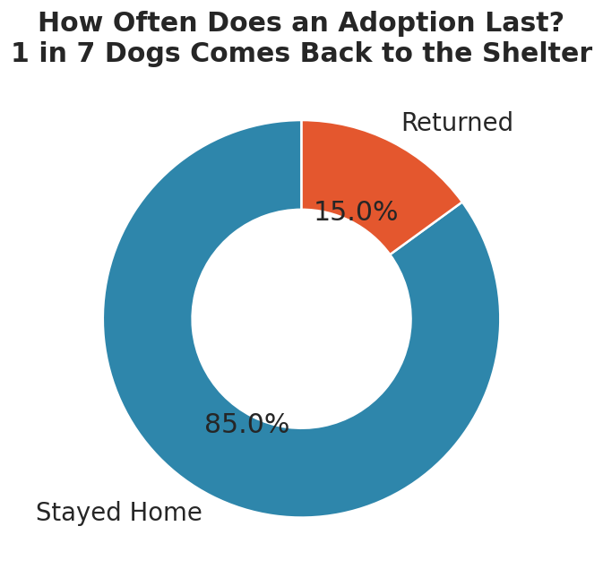
แผนภูมิโดนัทแสดงสัดส่วน 85.0% สำเร็จ vs 15.0% ถูกส่งคืน
🎙️ บทพูดผู้บรรยาย:
"จากข้อมูล 42,000 เคส เราพบว่า 85% หรือราว 35,700 ตัวสามารถปรับตัวและอยู่กับครอบครัวใหม่ได้อย่างถาวร นี่คือความสำเร็จที่น่าชื่นชม แต่ในทางกลับกัน ตัวเลข 15% หรือ 6,297 ตัวที่ถูกส่งคืน ไม่ใช่แค่สถิติธรรมดา เพราะการถูกส่งคืนหนึ่งครั้งหมายถึงความบอบช้ำทางจิตใจของสุนัข ความผิดหวังของครอบครัว และทรัพยากรของสถานสงเคราะห์ที่ต้องวนกลับมาดูแลซ้ำ คำถามสำคัญคือ 6,297 เคสนี้ เกิดอะไรขึ้นกันแน่?"
-
1. เข้ากับสัตว์เลี้ยงเดิมในบ้านไม่ได้: 22.0% (1,387 ตัว)
สุนัขเจ้าถิ่นปฏิเสธตัวใหม่ เกิดการต่อสู้ ขาดการทำ Meet & Greet ก่อนรับ
-
2. พฤติกรรมก้าวร้าว/ดุร้าย: 21.5% (1,352 ตัว)
กัดคนหรือสัตว์อื่น ไม่ได้รับการประเมินและฝึกอบรมก่อนส่งมอบ
-
3. วิตกกังวล/ทำลายข้าวของ: 15.5% (975 ตัว)
เห่าหอน กัดแทะสิ่งของเมื่อถูกทิ้งให้อยู่ลำพังวันแรกๆ
-
4. ไม่เป็นไปตามคาดหวัง: 11.9% (750 ตัว)
คาดหวังว่าสุนัขจะสมบูรณ์แบบตั้งแต่วันแรกโดยไม่ต้องปรับตัว
-
⚠️ ปัจจัยสุขภาพมีสัดส่วนน้อยมาก: โรคประจำตัวมีเพียง 5.0% และภูมิแพ้ขนมีเพียง 3.8%
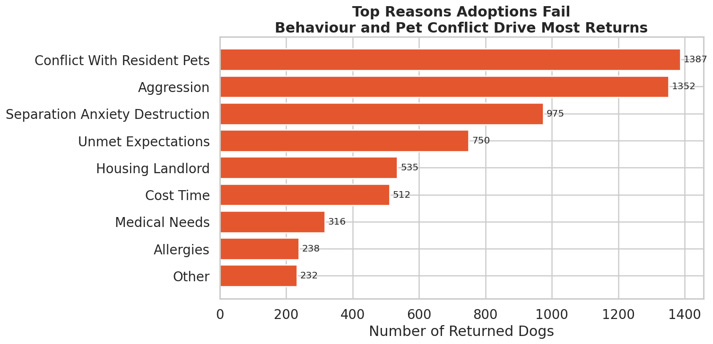
แผนภูมิแท่งแจกแจง 9 สาเหตุการส่งคืนสุนัข (4 สาเหตุหลักครอง >71%)
🎙️ บทพูดผู้บรรยาย:
"เมื่อเราแจกแจงสาเหตุของการส่งคืน 6,297 เคส ผลลัพธ์ที่ได้น่าประหลาดใจมากครับ หลายคนคิดว่าคนส่งหมาคืนเพราะแพ้ขนหรือหมาป่วย แต่ตัวเลขจริงชี้ว่า อาการแพ้มีแค่ 3.8% และปัญหาสุขภาพมีแค่ 5% เท่านั้น แต่กว่า 71% เกิดจาก 4 เรื่องหลัก: เข้ากับสัตว์เลี้ยงเดิมไม่ได้, ความก้าวร้าว, ความวิตกกังวล และความคาดหวังที่ผิด นี่คือหลักฐานชัดเจนว่า ความล้มเหลวส่วนใหญ่เป็นเรื่องของพฤติกรรมและการปรับตัวครับ"
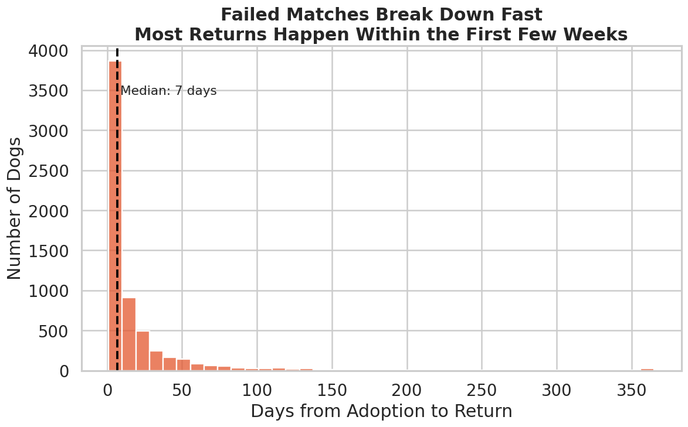
ฮิสโตแกรมแสดงจำนวนวันที่สุนัขถูกส่งคืน (Median = 7 วัน, พุ่งสูงสุดใน 1-14 วันแรก)
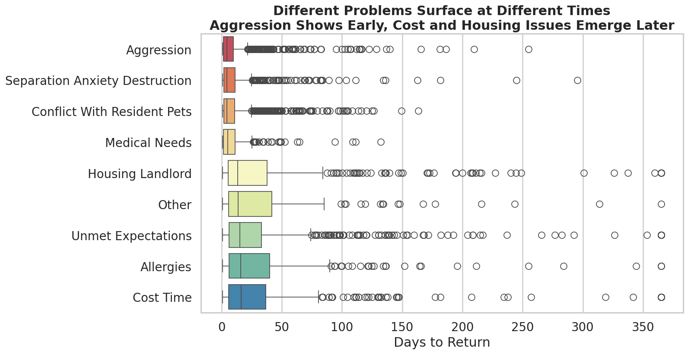
Boxplot เปรียบเทียบระยะเวลาของแต่ละปัญหา (พฤติกรรมปะทุทันที vs ที่พักอาศัยค่อยๆ สะสม)
⚡ วิกฤตระยะต้น (วันที่ 1–14): ปัญหาความก้าวร้าว การกัดกับหมาเดิม และเห่าหอนทำลายของจะปะทุทันทีในสัปดาห์แรก
⏳ วิกฤตระยะสะสม (เดือนที่ 1–3): ปัญหานิติบุคคล/หอพัก ค่าใช้จ่าย และความเหนื่อยล้าสะสมจะตามมาในเดือนที่ 2 และ 3
🎙️ บทพูดผู้บรรยาย:
"สไลด์นี้คือข้อมูลชี้เป็นชี้ตายของการจัดการครับ สถิติระบุว่า ค่ามัธยฐานของการส่งคืนอยู่ที่ '7 วัน' เท่านั้น แปลว่าถ้าการรับเลี้ยงจะพัง มันมักจะพังตั้งแต่อาทิตย์แรก! และเมื่อเราดูตามประเภทปัญหา จะเห็นการแบ่งกลุ่มที่ชัดเจนมาก ปัญหาพฤติกรรมปะทุทันทีในสัปดาห์แรก ส่วนปัญหาเรื่องค่าใช้จ่ายหรือนิติบุคคลจะตามมาในเดือนที่ 2 หรือ 3 ดังนั้น '14 วันแรก' จึงเป็นหน้าต่างเวลาทอง (Golden Window) ที่ต้องช่วยเหลืออย่างใกล้ชิดครับ"
-
0 พฤติกรรมเสี่ยง: อัตราส่งคืน 9.2%
สำเร็จสูงถึง 90.8% สุนัขไม่มีนิสัยดุ ไม่ขี้กังวล และขับถ่ายเป็นที่เป็นทาง
-
1 พฤติกรรมเสี่ยง: อัตราส่งคืน 16.5%
เริ่มมีความเสี่ยงสูงกว่าค่าเฉลี่ยของระบบ
-
2 พฤติกรรมเสี่ยง: อัตราส่งคืน 27.0%
มากกว่า 1 ใน 4 ตัวจะต้องถูกส่งคืนกลับมา
-
3 พฤติกรรมเสี่ยง: อัตราส่งคืน 40.2%
วิกฤตสูงสุด! 10 ตัวจะถูกส่งคืนถึง 4 ตัว ปัญหาพฤติกรรมเปรียบเสมือนตัวคูณความเสี่ยง
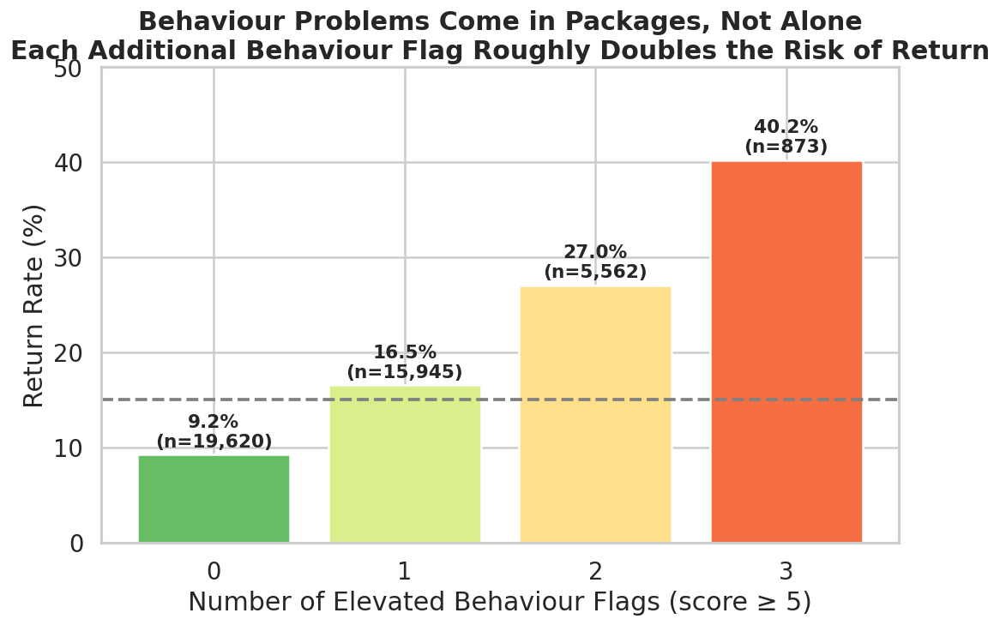
กราฟแสดงการเพิ่มขึ้นแบบขั้นบันไดของอัตราการส่งคืนตามพฤติกรรมเสี่ยงสะสม
🎙️ บทพูดผู้บรรยาย:
"กราฟนี้แสดง 'Behaviour Burden' หรือภาระพฤติกรรมสะสม ถ้าสุนัขไม่มีปัญหาพฤติกรรมรุนแรงเลย อัตราการส่งคืนจะต่ำมากเพียง 9.2% แต่เมื่อมีพฤติกรรมเสี่ยง 1 อย่าง อัตราส่งคืนขยับเป็น 16.5% ถ้ามี 2 อย่างกระโดดไปที่ 27% และถ้ามีทั้งดุ ขี้กังวล และก้าวร้าวพร้อมกัน อัตราส่งคืนจะพุ่งแตะ 40.2%! ปัญหาพฤติกรรมจึงเปรียบเหมือนตัวคูณความเสี่ยงที่เราต้องคัดกรองตั้งแต่ก่อนส่งมอบครับ"
สุนัขดุร้ายสูง (High Aggression):
• ไม่ฝึกเลย: ถูกส่งคืน 47.1% (แทบโยนเหรียญหัวก้อย)
• ได้รับการฝึกขั้นสูง: ส่งคืนลดเหลือ 29.6% (ลดลงไปถึง 17.5 pp)
สุนัขนิสัยดี (Low Aggression):
• ไม่ฝึก: ส่งคืน 12.8%
• ฝึกขั้นสูง: ส่งคืนเหลือเพียง 6.7% (เกราะคุ้มกันสูงสุด)
💡 สรุปผลเชิงนโยบาย: การลงทุนกับการฝึกพฤติกรรมพื้นฐานก่อนส่งมอบ ช่วยชีวิตสุนัขจากการถูกส่งคืนได้มหาศาลและคุ้มค่างบประมาณที่สุด
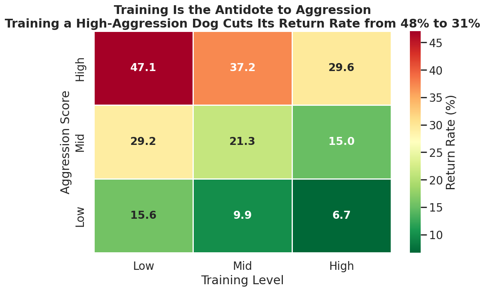
Heatmap แสดงผลของการฝึกสุนัข (Training Level) ในการลดอัตราการส่งคืนทุกระดับความดุร้าย
🎙️ บทพูดผู้บรรยาย:
"ข่าวดีที่สุดคือ 'เราแก้ไขมันได้' ครับ สุนัขที่มีนิสัยดุร้ายและไม่ได้รับการฝึก จะถูกส่งคืนสูงถึง 47.1% แต่เมื่อสุนัขกลุ่มเดียวกันนี้ได้รับการฝึกฝน อัตราส่งคืนจะลดลงเหลือ 29.6% ลดลงไปถึง 17.5% นั่นหมายความว่า หากสถานสงเคราะห์ลงทุนกับการฝึกพฤติกรรมพื้นฐานก่อนส่งมอบ จะช่วยชีวิตสุนัขจากการถูกส่งคืนได้มหาศาลครับ"
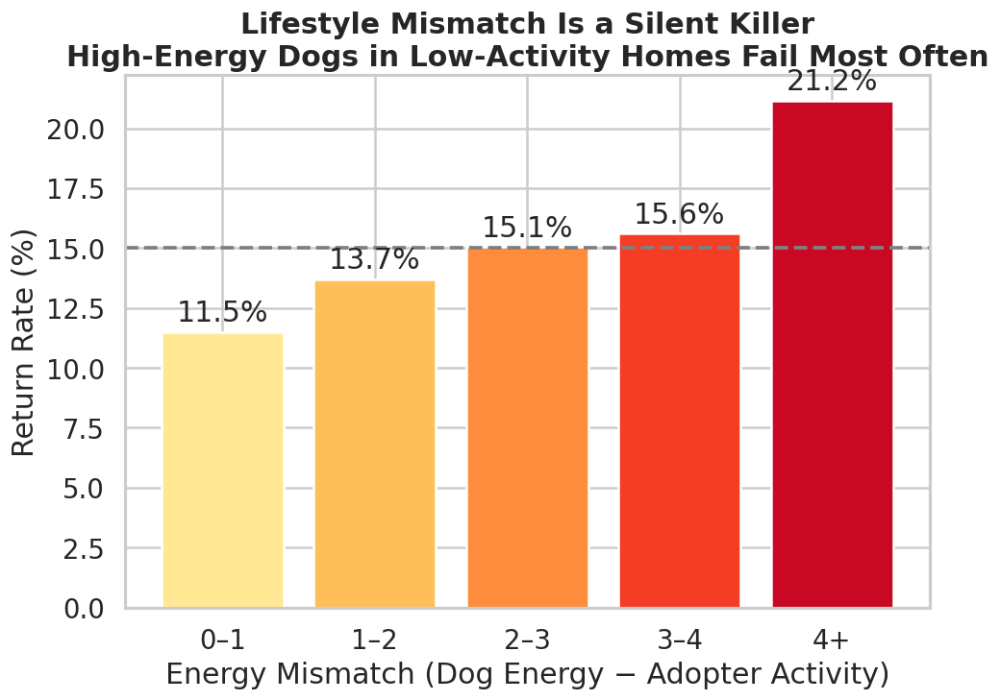
Energy Mismatch: สุนัขพลังงานสูงแต่เจ้าของไม่มีเวลาพาออกกำลังกาย (ส่งคืนพุ่งจาก 11.5% -> 21.2%)
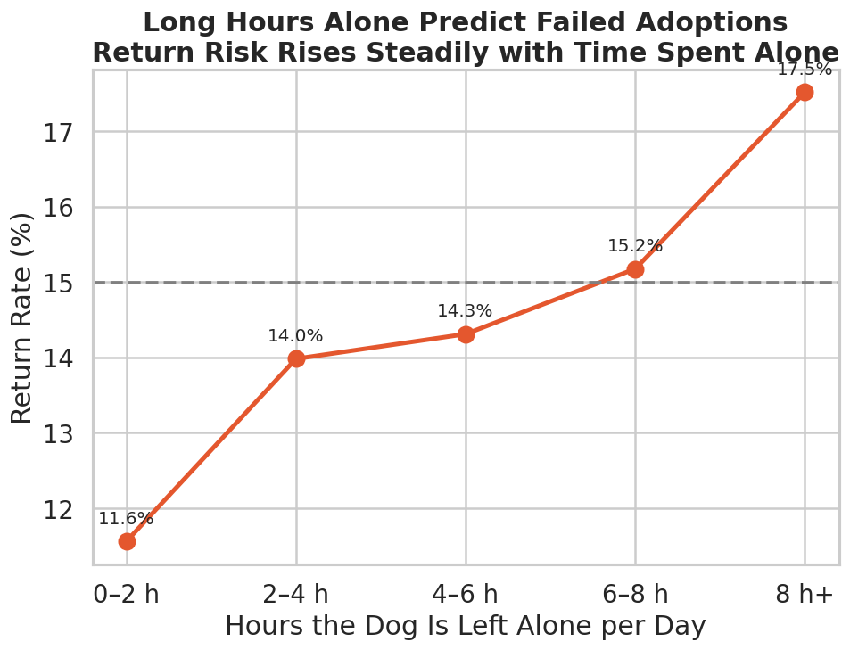
การปล่อยให้อยู่ลำพัง: สุนัขที่ถูกทิ้งไว้เกิน 8 ชั่วโมงต่อวัน มีอัตราส่งคืนสูงถึง 17.5%
🎙️ บทพูดผู้บรรยาย:
"นอกจากนิสัยสุนัขแล้ว ความเข้ากันได้ของวิถีชีวิตคือตัวแปรสำคัญครับ หากสุนัขพลังงานสูงไปอยู่กับเจ้าของที่ไม่มีเวลาพาไปออกกำลังกาย อัตราส่งคืนจะพุ่งจาก 11.5% ไปเป็น 21.2% ทันที เช่นเดียวกับการปล่อยสุนัขทิ้งไว้ลำพังเกิน 8 ชั่วโมงต่อวัน อัตราส่งคืนก็แตะ 17.5% ดังนั้นการคัดเลือกสุนัขให้ตรงกับสภาพความเป็นอยู่จริง จึงเป็นเกราะป้องกันที่ดีที่สุดครับ"
9.4%
มือใหม่ + คาดหวังสมจริง (Realistic First-timers)
สำเร็จสูงถึง 90.6% เพราะเตรียมใจรับการปรับตัว
16.6%
เคยเลี้ยงมาก่อน + คาดหวังสูงเกินจริง (Unrealistic Experienced)
ล้มเหลวสูงกว่ามือใหม่เกือบ 2 เท่า!
💡 บทเรียน: การปรับทัศนคติและความคาดหวังของผู้รับเลี้ยงให้ตรงกับความเป็นจริง มีผลต่อความสำเร็จมากกว่าประวัติการเลี้ยงดูในอดีตอย่างสิ้นเชิง
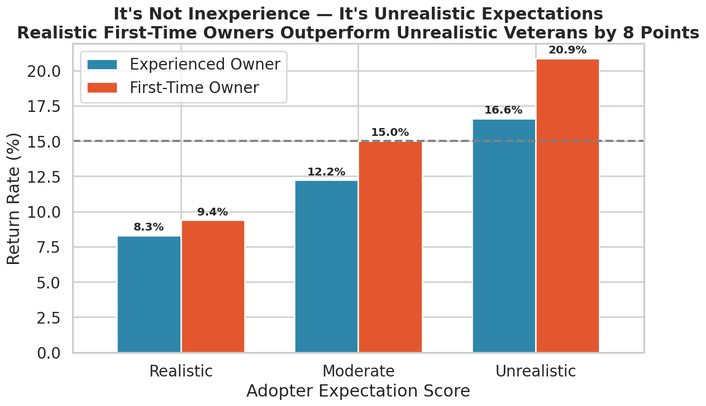
แผนภูมิเปรียบเทียบอัตราการส่งคืนระหว่างระดับประสบการณ์และความสมจริงของความคาดหวัง
🎙️ บทพูดผู้บรรยาย:
"นี่คือหนึ่งในสไลด์ที่ทรงพลังที่สุดครับ เรามักคิดว่า 'มือใหม่' เสี่ยงสูง แต่ตัวเลขบอกความจริงที่ตรงกันข้ามเลยครับ ถ้าผู้รับเลี้ยงมือใหม่มีความคาดหวังที่สมจริง รู้ว่าหมาอาจมีตื่นกลัวช่วงแรก อัตราส่งคืนจะต่ำมากเพียง 9.4% ซึ่งชนะคนมีประสบการณ์แต่คาดหวังว่าหมาต้องเพอร์เฟกต์ ที่มีอัตราส่งคืนถึง 16.6%! สิ่งนี้บอกเราว่า การปรับทัศนคติสำคัญกว่าประวัติในอดีตครับ"
-
มาเยี่ยม 1 ครั้ง (รับกลับทันที): อัตราส่งคืน 16.6%
การตัดสินใจฉับพลันมักมองข้ามปัญหาพฤติกรรมจริง
-
มาเยี่ยม 2 ครั้ง: อัตราส่งคืน 14.8%
-
มาเยี่ยม 3 ครั้ง: อัตราส่งคืน 12.5%
-
มาเยี่ยม 4 ครั้งขึ้นไป: อัตราส่งคืนเหลือ 10.9%
ความคุ้นเคยช่วยสร้างความผูกพันและลดความตื่นกลัว
-
📋 Adoption Counselling: การบังคับให้อบรมให้คำปรึกษาก่อนรับเลี้ยง ช่วยตัดความเสี่ยงลงได้อย่างชัดเจน
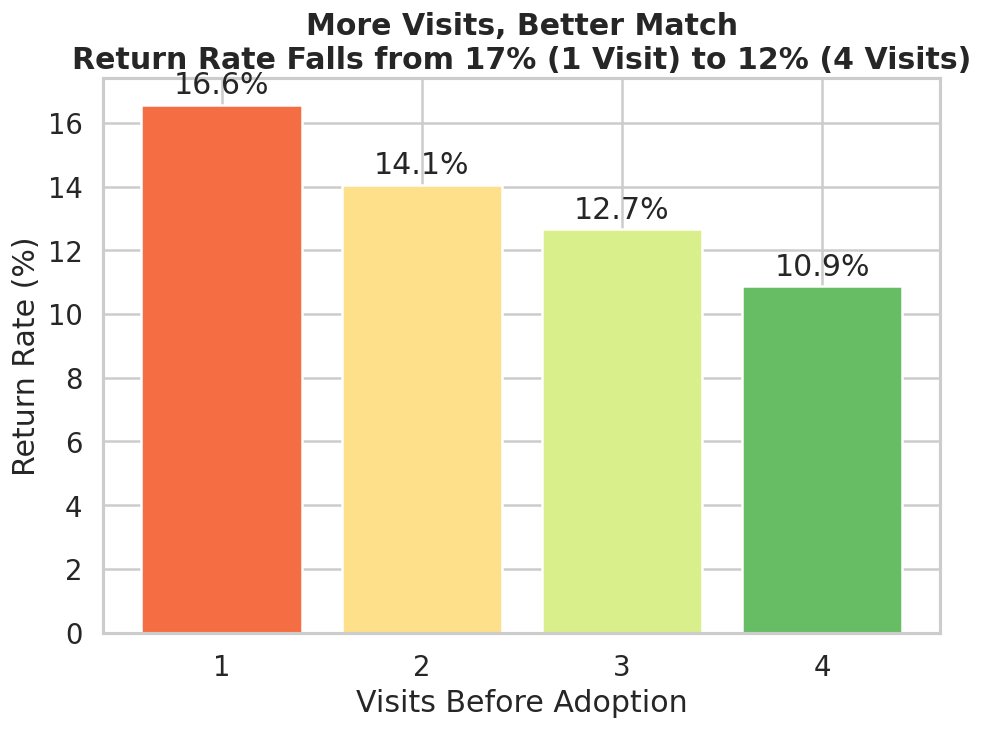
กราฟแสดงการลดลงของอัตราการส่งคืนเมื่อเพิ่มจำนวนครั้งที่มาเยี่ยมชมสุนัข
🎙️ บทพูดผู้บรรยาย:
"ดูสถิติการมาเยี่ยมสุนัขก่อนรับเลี้ยงครับ: คนที่มาดูวันเดียวแล้วรับกลับทันที มีอัตราส่งคืนสูงถึง 16.6% แต่เมื่อเพิ่มจำนวนครั้งที่มาเยี่ยมเป็น 2, 3 และ 4 ครั้ง อัตราการส่งคืนจะดิ่งลงเหลือเพียง 10.9% เท่านั้น! การมาเยี่ยมซ้ำเปิดโอกาสให้ทั้งคนและสุนัขได้สัมผัสตัวตนที่แท้จริง ช่วยตัดความเสี่ยงลงได้อย่างชัดเจนครับ"
🔴 ปัจจัยเร่งความเสี่ยง (Risk Drivers):
• ความก้าวร้าว/ดุร้าย (Aggression)
• ความวิตกกังวลเมื่ออยู่เดี่ยว (Separation Anxiety)
• ความคาดหวังไม่สมจริง (Unrealistic Expectations)
• พลังงานไม่ตรงกัน (Energy Mismatch)
🔵 ปัจจัยคุ้มกันความสำเร็จ (Protective Factors):
• ระดับการฝึกอบรมสุนัข (Training Level) - อันดับ 1
• การฝึกขับถ่ายเป็นที่ (House-trained)
• จำนวนครั้งที่มาเยี่ยม (Visits Before Adoption)
• ความคาดหวังที่สมจริง (Realistic Expectations)
💡 เข็มทิศการจัดสรรงบประมาณ: ควรมุ่งเน้นทรัพยากรไปที่การฝึกพฤติกรรมและการให้คำปรึกษาปรับความคาดหวัง
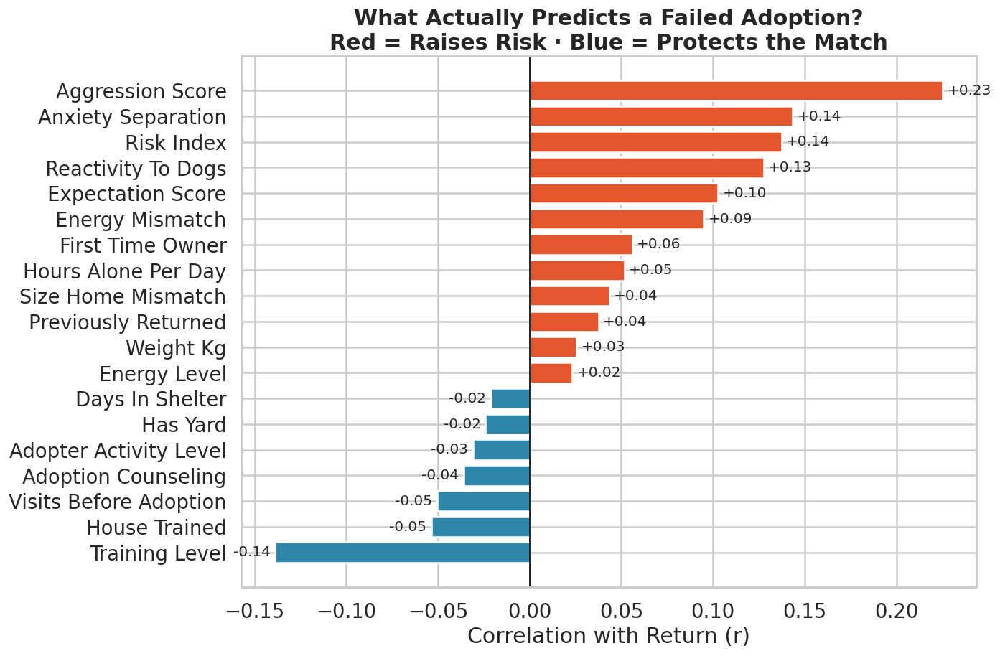
Tornado Chart สรุปค่าสัมประสิทธิ์สหสัมพันธ์ (Correlation Coefficient) ของทุกตัวแปร
🎙️ บทพูดผู้บรรยาย:
"สไลด์นี้รวบรวมตัวแปรทั้งหมดมาเปรียบเทียบในรูปแบบ Tornado Chart ฝั่งสีส้มคือปัจจัยที่เพิ่มความเสี่ยงส่งคืน นำโดยความก้าวร้าวและความวิตกกังวล ส่วนฝั่งสีน้ำเงินคือ 'เกราะคุ้มกัน' ซึ่งสิ่งที่โดดเด่นที่สุดคือ 'Training Level' หรือการฝึกอบรมสุนัข ชาร์ตนี้จึงเป็นเหมือนเข็มทิศบอกเราว่า ควรมุ่งเน้นทรัพยากรไปจัดการที่จุดใดเพื่อให้เกิดผลลัพธ์สูงสุดครับ"
ระยะที่ 1: ก่อนรับเลี้ยง
Pre-Adoption Gate
- ✔ บังคับพาหมาเดิมมา Meet & Greet
- ✔ กำหนดให้มาเยี่ยมอย่างน้อย 2-3 ครั้ง
- ✔ Counselling ปรับความคาดหวัง
- ✔ ตรวจสอบ Lifestyle & Energy Match
ระยะที่ 2: ในสถานสงเคราะห์
In-Shelter Intervention
- ✔ โปรแกรมฝึกพื้นฐาน (ลดส่งคืน 17.5%)
- ✔ ฝึกขับถ่ายให้เป็นที่ (House-training)
- ✔ บำบัด Separation Anxiety ก่อนส่งมอบ
- ✔ บันทึกคะแนนพฤติกรรมจริงอย่างโปร่งใส
ระยะที่ 3: หลังรับเลี้ยง 14 วันแรก
Golden Window Support
- ✔ โทรเช็กติดตามในวันที่ 3, 7, และ 14
- ✔ สายด่วน Hotline ให้คำปรึกษาฉุกเฉิน
- ✔ ส่งครูฝึกไปช่วยแนะนำที่บ้านทันที
- ✔ ชุมชนผู้รับเลี้ยงสนับสนุนทางอารมณ์
🎙️ บทพูดผู้บรรยาย:
"เราขอเสนอยุทธศาสตร์ 3 ระยะที่เป็นรูปธรรมครับ ระยะแรกคือ 'ก่อนรับเลี้ยง' กำหนด Meet & Greet และปรับความคาดหวัง ระยะที่สอง 'ในสถานสงเคราะห์' ต้องลงทุนกับการฝึกพฤติกรรมพื้นฐาน และระยะที่สาม 'หลังรับเลี้ยง 14 วันแรก' มีระบบโทรเช็กและสายด่วนครูฝึกในสัปดาห์แรก หากเราทำครบทั้ง 3 ระยะนี้ เราจะลดการส่งคืนลงได้เกือบครึ่งหนึ่ง ช่วยชีวิตสุนัขได้นับพันตัวครับ"
-
1. "It's about Matching, Not Charity" (การจับคู่สำคัญกว่าความสงสาร)
ความสำเร็จไม่ได้ขึ้นกับความสงสารเพียงชั่ววูบ แต่ขึ้นกับความลงรอยกันของพลังงาน เวลา และพื้นที่อาศัย
-
2. "Expectations Beat Experience" (ความคาดหวังชนะประสบการณ์)
ผู้รับเลี้ยงมือใหม่ประสบความสำเร็จได้สูงมาก เพียงแค่เข้าใจและเตรียมใจรับความจริงว่าสุนัขต้องการเวลาปรับตัว
-
3. "The 7-Day Golden Window" (สัปดาห์ทอง 7 วันแรก)
หากสถานสงเคราะห์ยืนเคียงข้างผู้เลี้ยงและช่วยให้ผ่านพ้น 14 วันแรกไปได้ อัตราความสำเร็จจะสูงเกิน 90% ทันที
-
4. "Training is the Best Investment" (การฝึกคือการลงทุนที่ดีที่สุด)
การฝึกพฤติกรรมพื้นฐานช่วยตัดความเสี่ยงลงได้เกือบ 18% เปลี่ยนสุนัขที่มีปัญหาให้กลายเป็นสมาชิกครอบครัวที่สมบูรณ์
🎙️ บทพูดผู้บรรยาย:
"สุนัขทุกตัวสมควรได้รับบ้านที่อบอุ่นและถาวร ข้อมูล 42,000 เคสนี้สอนเราว่า การส่งคืนสุนัขไม่ใช่ความล้มเหลวที่แก้ไขไม่ได้ หากเราเปลี่ยนผ่านจากการส่งมอบด้วยความรู้สึก มาเป็นการคัดกรองด้วยข้อมูลวิทยาศาสตร์ จับคู่พลังงาน ปรับความคาดหวัง และยืนเคียงข้างผู้เลี้ยงในสัปดาห์แรก เราจะสามารถเปลี่ยนสถิติ 1 ใน 7 ตัวที่ถูกทอดทิ้ง ให้กลายเป็น 7 ใน 7 ตัวที่ได้บ้านที่อบอุ่นตลอดไปครับ"
1. ข้อมูลภาพรวม & ความสูญเสีย
- • วิเคราะห์จากชุดข้อมูลจริง: 42,000 เคส
- • อัตราสำเร็จถาวร: 85.0% (35,703 ครอบครัว)
- • อัตราส่งคืนสถานสงเคราะห์: 15.0% (6,297 ตัว)
- • สัดส่วนความล้มเหลว: 1 ในทุกๆ 7 ตัว
- • ค่ามัธยฐานการส่งคืน: 7 วันแรก (วิกฤตสัปดาห์แรก)
2. 4 สาเหตุหลัก (ครองสัดส่วน >71%)
- • อันดับ 1: ทะเลาะกับสัตว์เลี้ยงเดิม (22.0% - 1,387 ตัว)
- • อันดับ 2: พฤติกรรมก้าวร้าว/ดุร้าย (21.5% - 1,352 ตัว)
- • อันดับ 3: วิตกกังวล/ทำลายของ (15.5% - 975 ตัว)
- • อันดับ 4: ไม่เป็นไปตามคาดหวัง (11.9% - 750 ตัว)
- • แพ้ขน (3.8%) และหมาป่วย (5.0%) เป็นสัดส่วนน้อยมาก
3. เกราะคุ้มกัน & ตัวคูณความเสี่ยง
- • 0 พฤติกรรมเสี่ยง -> ส่งคืนต่ำเพียง 9.2%
- • 3 พฤติกรรมเสี่ยง -> ส่งคืนพุ่งสูงถึง 40.2%
- • การฝึกสุนัข (Training) -> ลดการส่งคืนลงได้ 17.5%
- • เยี่ยมชม 4 ครั้ง -> ลดการส่งคืนเหลือ 10.9%
- • มือใหม่ที่คาดหวังสมจริง (9.4%) ชนะคนเคยเลี้ยง (16.6%)
4. ยุทธศาสตร์ 3 ระยะเพื่อผลลัพธ์
- • ก่อนรับ: บังคับ Meet & Greet + เยี่ยม 2-3 ครั้ง
- • ในสถานสงเคราะห์: บังคับฝึกพฤติกรรมพื้นฐาน
- • หลังรับเลี้ยง: โทรเช็กวันที่ 3, 7, 14 + สายด่วนครูฝึก
- • เป้าหมาย: ลดอัตราการส่งคืนลง 50%
- • เปลี่ยนจาก '1 ใน 7 ถูกทอดทิ้ง' สู่ 'บ้านถาวรตลอดไป'
🎙️ บทพูดผู้บรรยาย:
"สไลด์นี้คือหน้าสรุปผลรวบยอดทั้งหมดของการศึกษา 42,000 เคสครับ แม้เราจะสำเร็จถึง 85% แต่ช่องว่าง 15% หรือ 6,297 ตัวที่ถูกส่งคืน มีจุดวิกฤตอยู่ที่ 7 วันแรก และกว่า 71% เกิดจากพฤติกรรมและความขัดแย้ง แต่ข่าวดีคือเราป้องกันได้ด้วยการฝึกสุนัข การมาเยี่ยมชม และการปรับความคาดหวัง หากนำยุทธศาสตร์ 3 ระยะไปปฏิบัติจริง เราจะสามารถลดการส่งคืนลงครึ่งหนึ่ง และเปลี่ยนสุนัขที่เคยถูกทอดทิ้ง ให้ได้อยู่ในบ้านที่อบอุ่นตลอดไปครับ"